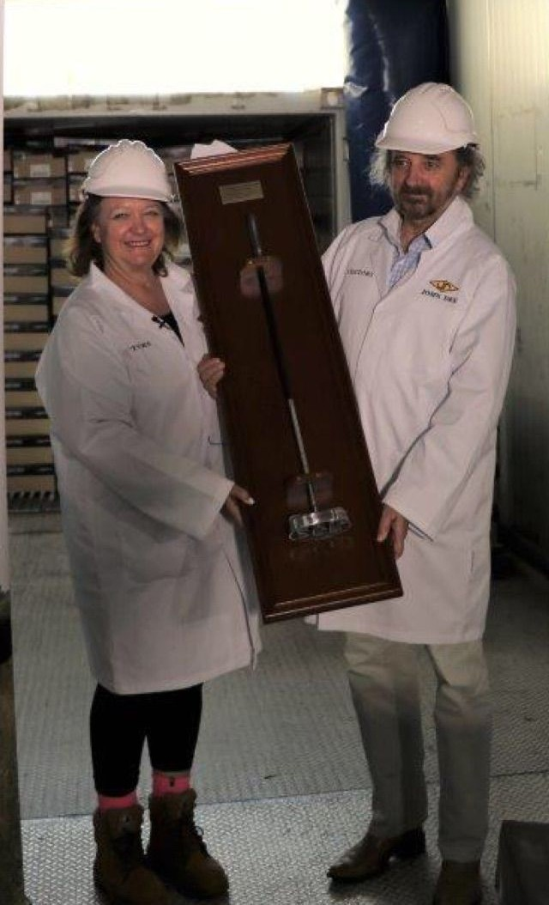

Nuestra historia & raíces
Nacida de los compromisos filantrópicos del grupo minero y agropecuario australiano Hancock Prospecting Pty Ltd, la Fundación Prospección Hancock fue establecida para dotar de una estructura autónoma, perdurable y solidaria a las acciones benéficas del grupo, bajo el liderazgo de su presidenta ejecutiva, Gina Rinehart.
Desde hace más de tres décadas, nuestras intervenciones se concentran prioritariamente en los territorios donde el grupo opera: comarcas rurales y aisladas, comunidades indígenas de Pilbara y Kimberley, núcleos mineros y explotaciones agrícolas pioneras.

Nuestra Misión
Financiar iniciativas concretas, medibles y sostenibles en cuatro áreas estratégicas: la salud y dotación de tecnología hospitalaria comarcal, la educación a través de becas de estudio, el desarrollo comunitario con respeto a la cultura autóctona, y el mecenazgo deportivo de élite junto con la asistencia a los veteranos.
Vínculo con Hancock Prospecting & Solidez Financiera
La fundación extrae su capacidad de acción de la solidez industrial y financiera del grupo Hancock Prospecting, que reinvierte activamente parte de sus beneficios en el progreso colectivo.
Gobernanza & Transparencia
- Un consejo de administración presidido por Gina Rinehart que valida la estrategia y el presupuesto anual de asignación.
- Un comité de donaciones que examina cada expediente conforme a criterios públicos de impacto, viabilidad y rigor.
- Un seguimiento cercano y continuado con las organizaciones beneficiarias para garantizar el empleo íntegro de cada ayuda.